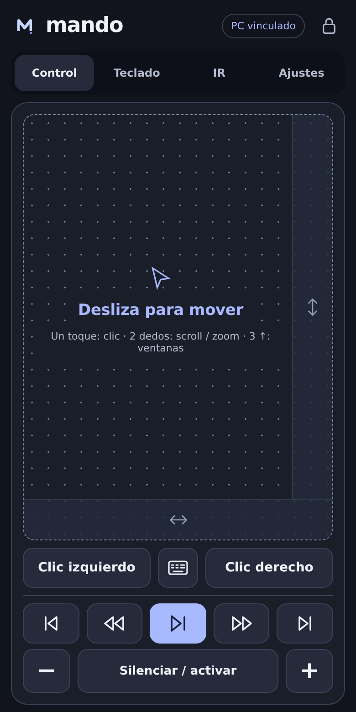

Un touchpad de bolsillo
Mueve el cursor, haz clic y desplázate por los bordes. El teclado de Android y las teclas extendidas completan el control.
MANDO / CONTROL REMOTO PERSONAL
Desliza. Escribe. Dale al play. Tu móvil se convierte en el mando de tu ordenador y tu salón.
Descargar MandoAndroid 9+ · Servidor para Windows 11 · Versión alpha

01 / Touchpad movimiento preciso
02 / Teclado escribe a distancia
03 / Multimedia el ritmo lo eliges tú
MENOS DISTANCIA. MÁS CONTROL.
De buscar una película a bajar el volumen. Los controles del día a día, reunidos en tu teléfono.
Así se conectaMueve el cursor, haz clic y desplázate por los bordes. El teclado de Android y las teclas extendidas completan el control.
Pausa, cambia de pista, avanza o retrocede. Mantén pulsado el volumen para ajustarlo sin tocar el PC.
Comparte texto del portapapeles en ambas direcciones, cuando tú lo pidas.
Volumen, silencio, Exit y encendido para TV LG en móviles con emisor IR. Si no lo necesitas, oculta la pestaña.
DEL MÓVIL AL ORDENADOR
Instala cada parte en su dispositivo. Conecta ambos a la misma red local y escanea el QR.
Instala Mando Server con tu cuenta habitual de Windows. Ábrelo desde Inicio: lo encontrarás en la bandeja del sistema.
Windows 11 · Instalador EXEInstala la APK en Android. En Mando pulsa «Escanear QR del PC» y apunta al código que muestra el servidor.
Móvil y PC en la misma red localLa autorización queda guardada. Si cambia la IP del ordenador, utiliza «Buscar en Wi-Fi» para encontrarlo de nuevo.
Tu PC queda recordadoDOS DISPOSITIVOS. UN MISMO MANDO.
La app en tu teléfono. El servidor en tu PC.
Descarga las dos partes para empezar.
Versiones de prueba. APK firmado e instalador Windows sin firma digital.
Instrucciones de instalaciónANTES DE EMPEZAR
Estas descargas son versiones alpha. Algunas funciones requieren validación en cada PC. El control de Windows bloqueado tiene un fallo pendiente de diagnóstico en un equipo de prueba; no está verificado el acceso antes del primer inicio de sesión.
No. La app actual conecta con nuestro Mando Server. Si todavía tienes el servidor de Remote Mouse abierto, ciérralo para evitar un conflicto de puerto.
Utiliza «Buscar en Wi-Fi»: el móvil conserva su autorización. Cambiar de PC, reinstalar Windows o revocar el dispositivo puede requerir un nuevo QR.
La VPN debe permitir que Mando acceda a tu red local. Comprueba esa opción en la configuración de tu VPN si no encuentra el servidor.
Compara el SHA-256 de tus descargas con las sumas publicadas. También puedes consultar las versiones y tamaños. El instalador de Windows aún no tiene firma digital.